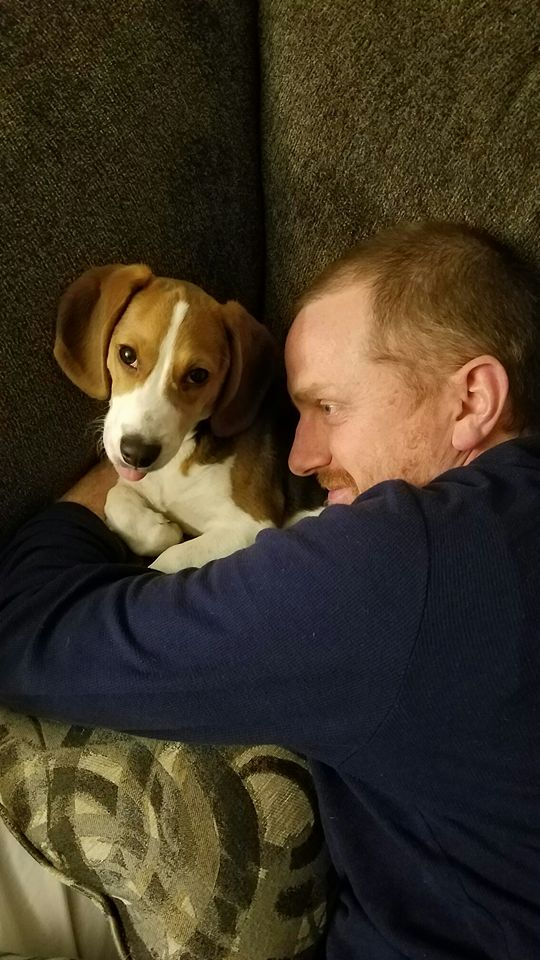

Greg Colvin
About Me
Hello, my name is Greg Colvin and I'm interested in learning more about coding and web development. I grew up in California, but have lived in Utah now for about 18 years, so one might say I'm a certifiable Utahn. I have a stong math background, and almost became a math teacher but decided it wasn't for me.
I have always loved messing around with computers, whether it be trying to fix something, building them, or tinkering with them in general. I've been working in IT at a print company in Provo for 12 years. Although it's been mostly enjoyable, I'd love to be able to gain additional skills and progress with another company doing something different.
My wife of 8 years and I live in Lehi with our little Beagle named Newton. He keeps me on my toes, but is a pleasure to be around. Last summer, the 3 of us had an adventure working as camp hosts up in American Fork canyon. Between cleaning fire pits and outhouses, I did as much reading as I could on HTML and CSS, and dabbled in Javascript. Of course, practice is the best teacher, so I decided to enroll in a boot camp to sharpen my skills.